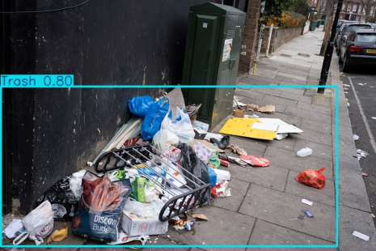
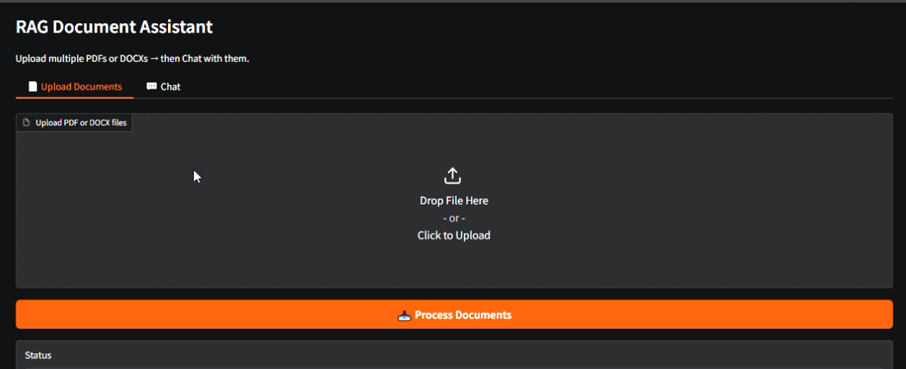
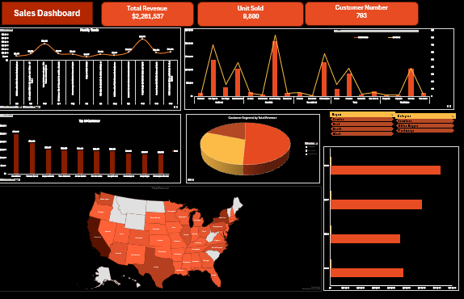

👋 Hello
Data Scientist & AI Engineer
Turning raw data into intelligent decisions, building ML models, interactive dashboards, and AI-powered solutions that drive real business value and achieve goals.
Who I Am
I'm a passionate Data Scientist and AI Engineer with a strong foundation in machine learning, statistical modeling, and business intelligence. I specialize in bridging the gap between complex data and actionable business decisions.
Whether it's developing predictive models that save lives, building computer vision systems for smart cities, or creating insightful dashboards that guide strategy I bring a results-driven mindset to every project.
I work closely with businesses and organizations to understand their challenges, then engineer data solutions that are not just technically sound, but genuinely impactful. My goal is simple: make data work for you.
Academic Background
What I Offer
My Work
Artificial Intelligence & Machine Learning
Predictive Models & AI Systems


Data Analysis & Business Intelligence
Dashboards & Analytical Reports

Get In Touch
Have a project in mind, a dataset to explore, or a business problem that needs a data-driven solution? I'd love to hear from you.
Whether you're a startup looking for your first data pipeline or an enterprise needing advanced ML capabilities let's talk and figure out how I can help.